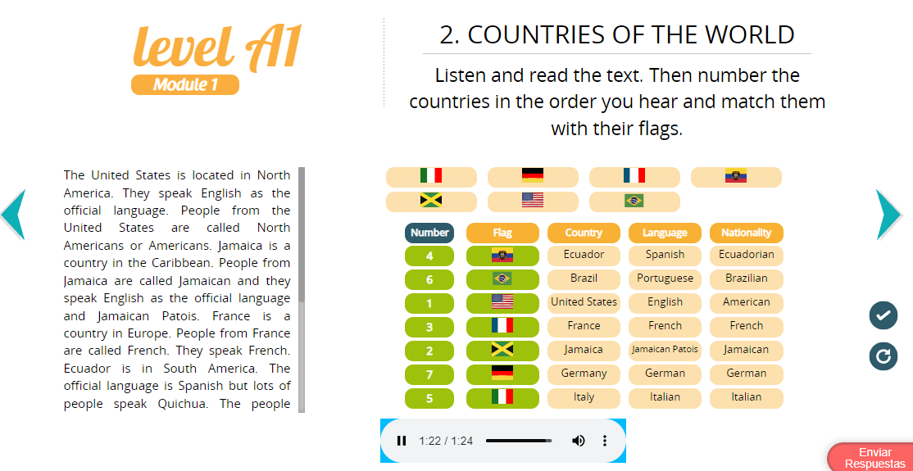
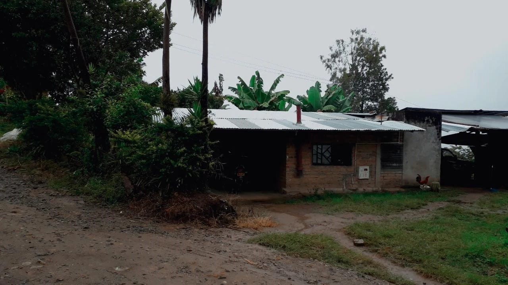

Task 2 This is me
A. Excercice Numbre Two of the Module One
B. Text Complete
My name is Jose Ever Muñoz I am from Colombia. I am a student. My lenguage is Spanish. I am single and I am eighteen years old. I like to listen to music but don’t like to watch tv. I am studyng systems engginering. I live in Isnos with my parents and my sister. There are no park near my house because I don’t live in the city but there are a church in front of the park in Isnos. I live in the countryside, there are many trees near here, also there is a river below and many coffe crops.  I get up at five o’clock. I have breakfast at seven o’clock after I go to work on a motocycle. I have lunch at twelve o’clock later I go back home at four o’clock. After the work, I do homework for the university. I have dinner at six o’clock. I go to bed at ten o’clock. On weekends, I do homework for the university and I play soccer. I study English in Duolingo every day. I spend time with my family on weekends.
C. Screenshots of my Participation
D. Autoevaluación y Reflexión Personal
• ¿Estudié y aprendí los temas sugeridos del e-Book?
Si los revise y tengo que decir que el OVI Unidad 1 Talking about a city es muy bello visualmente.
• ¿Participé en el foro dentro de los tiempos indicados?
Si participe en el foro, dentro la fecha límite.
• ¿En cuáles de los siguientes espacios de interacción y aprendizaje participé: Foro de esta tarea, CIPAS,
Webconferencias, grupo de WhatsApp, grupo de Skype, etc.?
Participe en el foro de la tarea con las actividades correspondientes.
• ¿Qué aprendí de esta tarea?
Aprendí mucho vocabulario, la mayoría de los ejercicios me recordaron los tiempos gramaticales de la escuela que ya
tenía un poco olvidados, me sirvieron de repaso.
• ¿Es importante lo que estoy aprendiendo? ¿por qué?
Es muy importante porque el inglés es la lengua más importante, en todos los países hablan inglés, las oportunidades de
trabajo mejor remuneradas son de empresas donde se utiliza el inglés como lengua principal.
• ¿Cómo aporta este aprendizaje a mi vida personal y profesional?
El inglés es la lengua más importante que aprender, es el idioma que nos abre las puertas al mundo, a todo el globo de
la tierra, es utilizado internacionalmente, las grandes economías, las grandes empresas, todas ellas usan inglés, el
inglés nos permite el intercambio de ideas, conocimientos e información, podremos comunicarnos fácilmente con
profesionales de otros países, y el trabajo es mejor pagado cuando uno sabe hablar inglés.